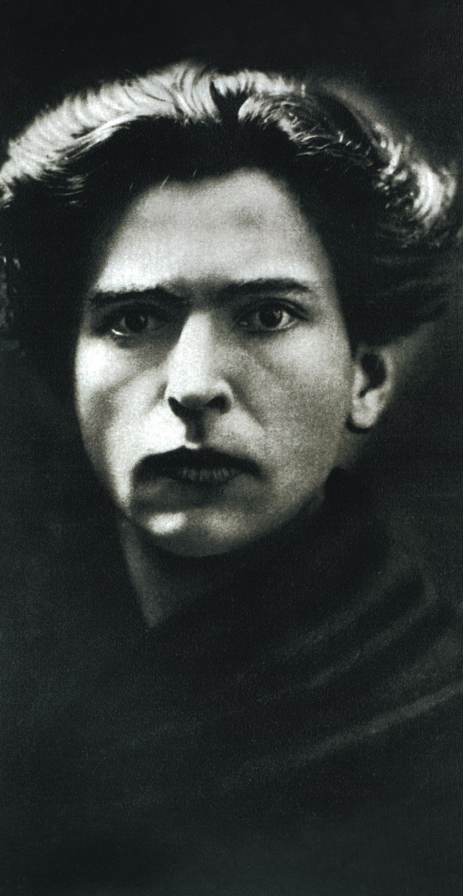

Despre George Enescu
George Enescu (n. 19 august 1881, Liveni, Botosani - m. 4 mai 1955,
Paris) este considerat cel mai important muzician roman. Personalitatea
sa artistica s-a manifestat in multiple ipostaze: compozitor, violonist,
pedagog, pianist si dirijor.
A inceput sa cante la vioara la varsta de 4 ani, primind indrumari
muzicale de la parintii sai si de la un vestit lautar, Niculae
Chioru. De la varsta de 5-6 ani dateaza primele sale incercari de
compozitie. Studiul profesionist al muzicii i s-a datorat, pentru
inceput, profesorului Eduard Caudella.
Intre anii 1888-1894, studiaza la Conservatorul din Viena, avandu-i
ca profesori, printre altii, pe Joseph Hellmesberger jr. (vioara) si
pe Robert Fuchs (compozitie). La varsta de 8 ani debuzeaza ca
violinist. Presa vieneza l-a numit „un Mozart roman“.
Dupa absolvirea Conservatorului din Viena, isi continua studiile la
Conservatorul din Paris (1895-1899) sub indrumarea lui Martin Pierre
Marsick (vioara), André Gédalge (contrapunct), Jules Massenet si Gabriel
Fauré (compozitie). Printre colegii sai de la Paris se numara Maurice
Ravel, Florent Schmitt, Charles Koechlin si Theodor Fuchs.
Debutul sau componisitic in conditii exceptionale, datorat in parte
protectoarei sale Elena Bibescu, are loc pe 6 februarie 1898, la
Concertele Colonne din Paris, cu Poema Romana, op. 1.
In acelasi an, muzicianul in varsta de 17 ani incepe sa dea lectii de
vioara si sustine recitaluri la Bucuresti. Admirat de Regina Elisabeta a
Romaniei (celebra protectoare a artei Carmen Sylva), este deseori
invitat sa cante la Castelul Peles din Sinaia. Enescu a compus mai multe
lieduri, inspirat de cateva poeme ale reginei Carmen Sylva.
Din primii ani ai secolului XX dateaza compozitiile sale mai cunoscute,
cum sunt cele doua Rapsodii Romane, op. 11(1901-1902), Suita nr. 1
pentru orchestra, op. 9(1903), prima sa Simfonie, in Mi b, op. 13
(1905), Sapte cantece pe versuri de Clément Marot, op. 15 (1908).
Activitatea sa muzicala alterneaza intre Bucuresti si Paris. Intreprinde
turnee in mai multe tari europene, alaturi de parteneri prestigiosi, ca
Alfredo Casella, Pablo Casals, Louis Fournier.
In timpul Primului razboi mondial ramane in Bucuresti. Dirijeaza
Simfonia a IX-a de Ludwig van Beethoven (pentru prima data in auditie
integrala in Romania), compozitii de Hector Berlioz, Claude Debussy,
Richard Wagner, precum si creatii proprii: Simfonia nr. 2 (1913), Suita
pentru orchestra nr. 2 op. 20 (1915). In 1913, are loc prima editie a
Concursului National de Compozitie fondat de el cu scopul stimularii
creatiei muzicale autohtone. Decernat din venituri proprii si constand
din sume generoase, premiul oferea castigatorilor sansa de a se
specializa la Paris, precum si de a-si auzi interpretate in concerte
piesele laureate.

Dupa razboi, maestrul continua seria turneelor atat in Europa, cat
si in Statele Unite ale Americii. Peste Ocean a dirijat, incepand
din 1923, orchestre prestigioase, printre care Philadelphia
Orchestra, Boston Orchestra, Chicago Symphony.
Activitatea sa de pedagog capata de asemenea o importanta
considerabila. Printre elevii sai se numara violonistii Christian
Ferras, Ivry Gitlis, Arthur Grumiaux si Yehudi Menuhin. Acesta din
urma a pastrat un adevarat cult si o profunda afectiune pentru
Enescu. "Pentru mine, Enescu va ramane una din veritabilele minuni
ale lumii. (...) Radacinile puternice si nobletea sufletului sau
sunt provenite din propria lui tara, o tara de inegalata frumusete."
(Yehudi Menuhin).
In 1936, pe 13 martie, a avut loc la Paris premiera operei Oedip, pe
un libret de Edmond Fleg, cu un succes rasunator la public.
In timpul celui de-al doilea razboi mondial, Enescu ramane in Bucuresti,
unde se distinge printr-o activitate dirijorala intensa, incurajand
totodata si creatiile unor muzicieni romani ca Mihail Jora, Constantin
Silvestri, Ionel Perlea, Theodor Rogalski, Sabin Dragoi.
În 1946, în luna aprilie întreprinde un turneu în URSS, unde intră în
contact cu personalităţi de primă mână ale muzicii ruse: Dmitri
Şostakovici, Aram Haciaturian, Kiril Kondraşin, David Oistrah, Lev
Oborin. În luna mai, primeşte la Bucureşti vizita lui Yehudi Menuhin. În
luna septembrie, împreună cu soţia sa Maria (Maruca, născută
Rosetti-Tescanu, devenită la prima căsătorie prinţesă Cantacuzino) ,
pleacă în turneu în Statele Unite ale Americii. La revenirea în Europa
se stabileşte la Paris, din protest faţă de regimul comunist instaurat
în România.
Printre ultimele creaţii se numără Cvartetul de coarde op. 22 nr. 2,
poemul simfonic Vox Maris op. 31, Simfonia de cameră op. 33.
George Enescu se stinge din viaţă în noaptea de 3 spre 4 mai 1955 şi
este înmormântat la Père Lachaise din Paris.